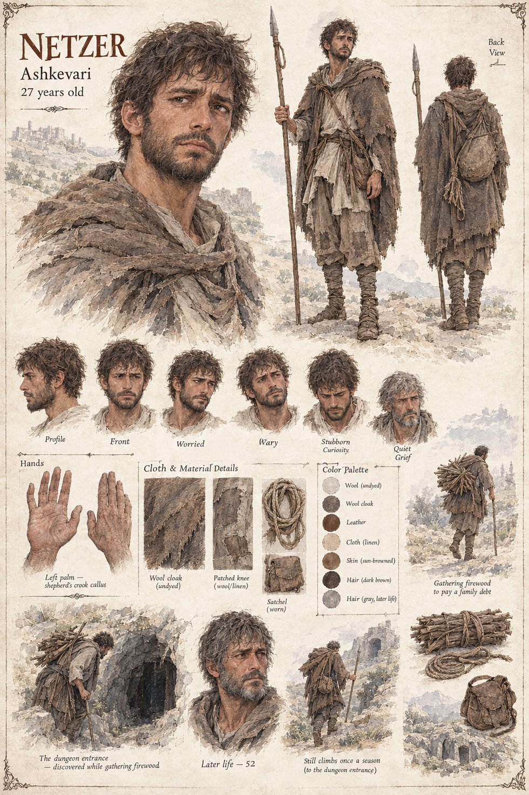

Netzer
Founding Five · Ashkevari shepherd
A shepherd deep enough in debt to go looking for firewood he doesn't have to buy, which is how he finds the doorway above Har-Peleg that three generations of shepherds had walked past without seeing. He pays off the debt within the year and stops descending once the reason he went down is settled, spending the rest of a long life as the guild's first and most reluctant elder statesman. He climbs back to the entrance once a season for the rest of his life to ask it, plainly, whether any of it ever meant anything. It never answers him.
Appears in The Stolen Prince War